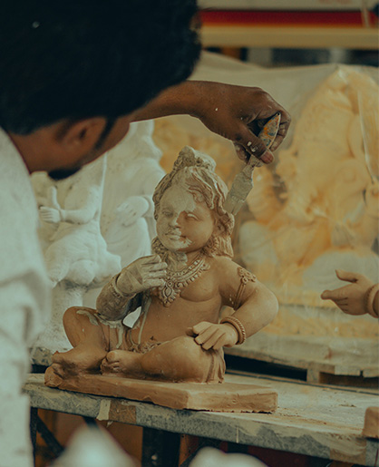

John Smith
For a lot of people, when they see realistic art it is considered compleatly diferant to styleised art. In reality realistic art is just as much about a the artist creating a perticular idea of beauty, and the tradition tied to it. This goes beond just whatevere we find atractive in people because the women of greek and renesaunce art would not be considered atractive my modern standards but the art is still apresiated by us.

There are many diferant styles of realism. Some of them are harsher and others are softer. Within the same style of realism diferant subjtcts and emotions are chosen. I personaly find more subtle expretions to be more emotionaly moving rather than more extream emotional displays. I find it hard to understand what exactly a charictor is fealing when he is screaming, and all art made this way is hard to tell apart. It is also hard to relate to as I have only suffered mildly in the past. Others can have diferant opinions. each artist will end up making diferant art because of diferant beliefes. That was the point of the previous point.